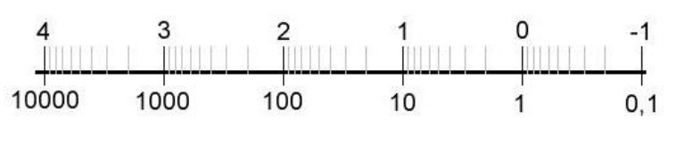

Discretization of R, without the disadvantages of fixed point (fixed range, overflow, too little precision at small numbers and wasted precision at big numbers, ...)
Normalized t-digit floating point to basis B (machine number):
FB,t,α,β={M⋅BE∣M=0∨⇒t digits, no leading 0Bt−1≤∣M∣<Bt,range for Eα≤E≤β, with M,E∈Z}
The mantissaM and exponentE are saved as integers, the basis B and digits t are ususally implicit.
The absolute distance between two neighboring floats is not constant: ∣98⋅100−99⋅100∣=100 ∣98⋅101−99⋅101∣=101
The bigger the absolute value gets, the less precision it has (logarithmic scale!)

Max relative distance = resolutionϱ:=B1−t≥∣M∣1=∣M∣⋅BE(∣M∣+1)⋅BE−∣M∣⋅BE
Min positive float = σ:=Bt−1⋅Bα
Max float = λ:=(Bt−1)⋅Bβ
Rounding function rd(x) maps every x∈R to a f∈F
- they should be surjective, idempotent and monotone
- if x∈F, then rd(x)=x
- if x∈R∖F, then every x:=(M+δ)⋅BE, with δ∈(0;1) has a neighbor to left/right: fl(x):=max{f∈F∣f≤x}=M⋅BE fr(x):=min{f∈F∣f≥x}=(M+1)⋅BE
- rounding down: rd−(x):=fl(x), rounding up:rd+(x):=fr(x)
- chop off (= towards zero): rd0(x):={fl(x)fr(x)if x≥0if x≤0
- correct rounding (= towards closest): rd∗(x):={fl(x)fr(x)if x≤mif x≥mwith m:=2fl(x)+frx
- if x is exactly in the middle, choose what to do!